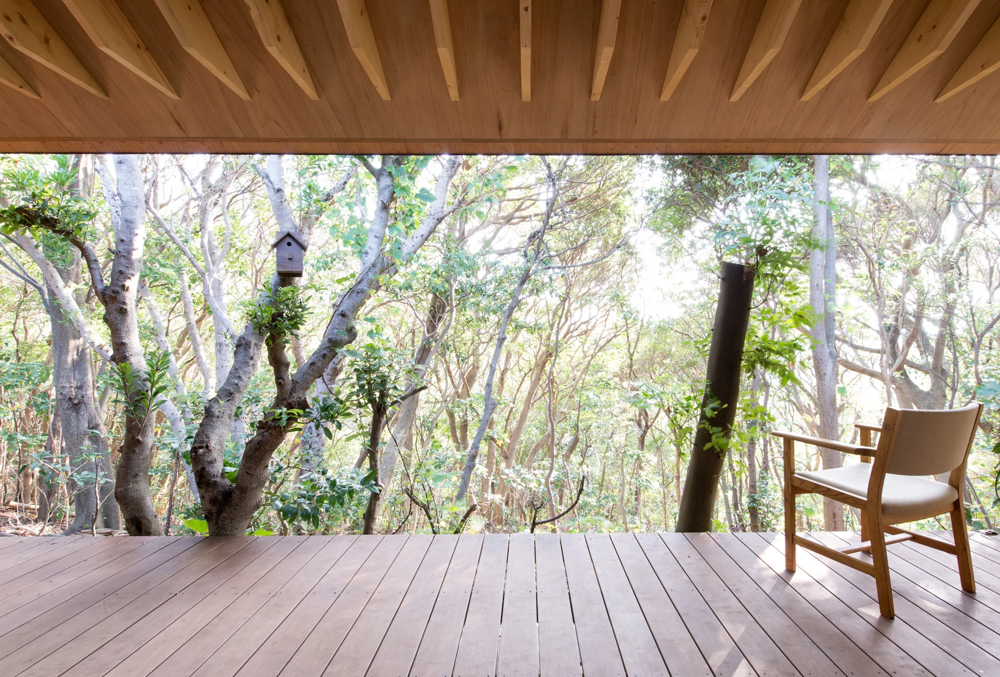

ARCHITECTURE WITHIN THE LANDSCAPE
風景のなかに、
余白を。
光と、緑と、建築と。
01 / A MOMENT OF STILLNESS日常の、その先へ。
SELECTED PLACES
自然と建築の、
あいだに。
ひとつの場所に、
ひとつの風景。
それぞれの建築が持つ、静かな表情。
02 / GAZEBO HOUSEPhoto: Satoshi Ikuma
A DIFFERENT DISTANCE
眺めとともに、
暮らす。
03 / VERTICAL / HORIZON
LIGHT / TEXTURE / TIME
触れる。
光を含む。
時を重ねる。
近づくと、見えてくるもの。

04 / HAKOBUNE — A SPATIAL STUDY
窓辺に、
立ってみる。
一枚の写真から、その場所へ。
PHOTOGRAPHスクロールで、空間の奥へ。
雲海に浮かぶ箱舟 Photo: Toshihisa Ishii / Blitz Studio
WHAT WOULD YOU LIKE TO CREATE?その先の、建築。
THE STUDIOARCHITECTURE / PHOTOGRAPHY / DESIGN
 大きな屋根の家 / Photo: Takayuki Mori
大きな屋根の家 / Photo: Takayuki Mori